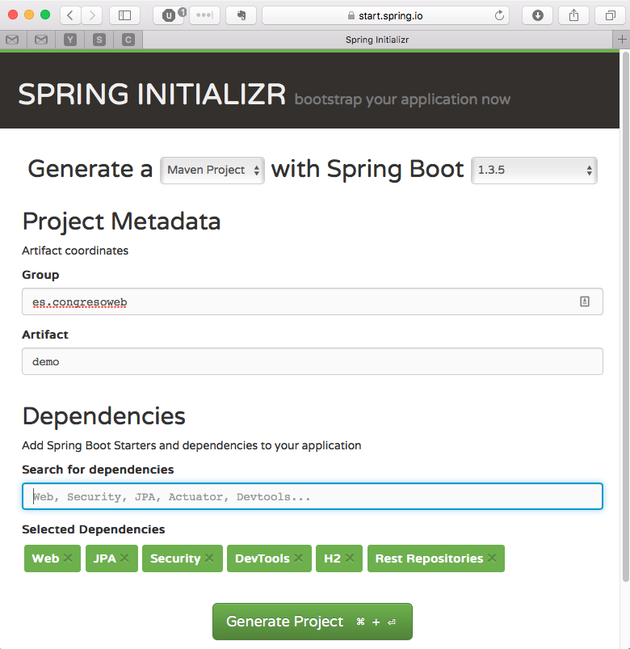

Agilizando el desarrollo con Spring Boot
(o porqué Java sigue molando)
¡Hola!
Mi nombre es Jesús Ángel Samitier
Soy desarrollador en el área e-Commerce de Hiberus Internet
¿¡Pero esto qué es!?
¿¡Pero esto qué es!?
Java sigue molando
Spring Boot, qué es y qué no es
Montar el proyecto y familiarizarnos con Spring Boot
CommandLineRunner
¡Vamos a montar un REST!
¡No, en serio, vamos a montar un REST!
Un poco de web
Me gusta Java
¿Por qué?
Compilador
JVM
Bytecode: compatibilidad con otros lenguajes
Comunidad
¿No te mola Java?
Vamos a intentar descubrir el porqué

¿Quizás...
... una framework dificil de configurar?
... legacy code?
... configuraciones infinitas de despliegue?
... xml xml xml?
Spring Boot
No es una framework
La framework es Spring MVC
Herramienta que simplifica la configuración y el despliegue de proyectos Java
start.spring.io

mvn clean install
mvn spring-boot:run
o también:
java -jar target/foobar-1.0-SNAPSHOT